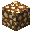
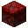
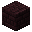
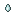

Rumo ao Nether
Passou pelo portal? Bem-vindo ao lugar mais quente do Minecraft! Aqui estão os 5 biomas, os mobs que aparecem em cada um, as estruturas com tudo o que vem nos baús e todos os mobs do Nether.
Guia rápido: clique em um bioma ou em uma estrutura
Biomas
Estruturas
Arraste para o lado para ver todos →

Os biomas do NetherO Nether tem 5 biomas, cada um com a sua cor, os seus blocos e os seus mobs. Os mobs estão do mais comum para o mais raro, do jeito que o jogo sorteia quem aparece.

As estruturas do NetherSão 4 construções que o jogo espalha pelo Nether. Veja onde cada uma aparece, quem mora lá e o que tem nos baús — com a chance de cada item aparecer em um baú.

Os mobs do NetherQuem você vai encontrar por lá, quem é de boa e quem vai te atacar assim que te ver.